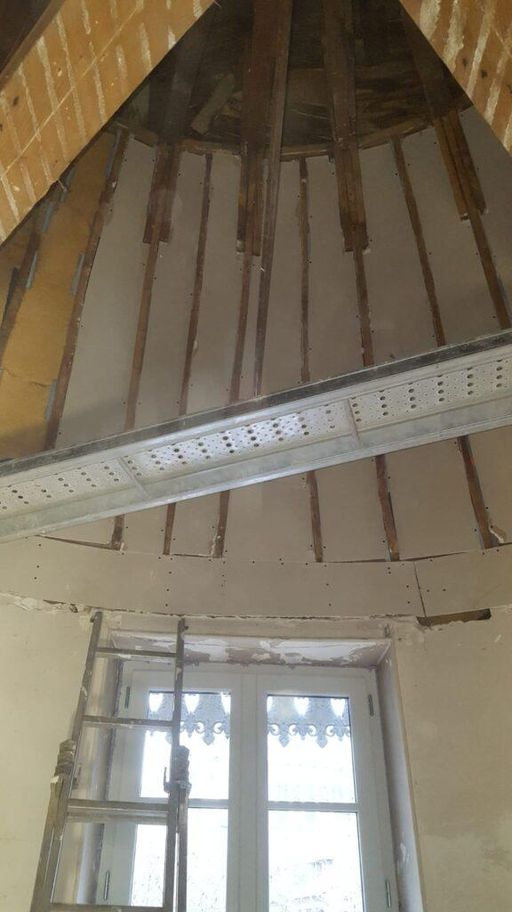

Plâtrerie et plafonds
Cloisons, doublages, faux plafonds et plâtre traditionnel, du neuf à la restauration de bâti ancien, dans le bassin de Vichy.

Ce que nous réalisons
Nous montons les structures, posons les plaques ou le plâtre et livrons des surfaces prêtes à peindre.
Cloisons et doublages
Plaques de plâtre sur ossature métallique ou bois, pour créer une pièce, un dressing ou isoler un mur.
Faux plafonds
Plafonds suspendus, plafonds démontables et intégration des spots et de l'éclairage.
Isolation thermique et phonique
Doublages isolants et plafonds acoustiques pour gagner en confort.
Pièces humides
Plaques hydrofuges pour salles de bains et cuisines, avec traitement avant carrelage.
Bâti ancien et décor
Plâtre et chaux traditionnels, moulures, corniches et rosaces restaurées.
Bandes et finitions
Bandes, angles, enduits et ponçage pour une surface parfaitement lisse.

Spécialiste du bâti ancien
Plafonds courbes, charpentes apparentes, moulures : les maisons et immeubles anciens du bassin de Vichy demandent des techniques adaptées. Découvrez la restauration d'un dôme près de la Rotonde de Vichy.
Voir le chantierNotre méthode
- Relevé et préparationMesures, protection des lieux et passage des gaines électriques.
- OssatureMontage des rails et montants, isolant posé entre les montants si besoin.
- Pose et finitionsPlaques ou plâtre, puis bandes, angles et ponçage.
- Contrôle et nettoyageVérification de la planéité, nettoyage et évacuation des déchets.
Questions fréquentes
Une autre question ? Appelez-nous au 06 26 72 61 93.
Cloison en plaques de plâtre ou en briques ?
Une cloison en plaques de plâtre est plus légère et plus rapide à monter, et elle peut intégrer un isolant. Une cloison en briques ou en carreaux de plâtre est plus massive mais plus longue à réaliser. Nous vous conseillons selon l'usage de la pièce.
Combien de temps faut-il pour une cloison ou un plafond ?
Comptez 1 à 2 jours pour une cloison de 10 à 15 m², et 2 à 3 jours pour refaire un plafond de 20 m². Le temps de séchage des enduits s'ajoute avant la peinture.
Peut-on peindre directement sur les plaques ?
Non, il faut d'abord appliquer une sous-couche adaptée aux plaques de plâtre. Elle évite les différences d'aspect entre les bandes et les plaques.
Est-ce que les travaux font beaucoup de poussière ?
Nous utilisons des outils avec aspiration et nous protégeons sols et mobilier. Le nettoyage de fin de chantier est compris.
Plâtrerie dans le bassin de Vichy
Nous intervenons à Vichy, Cusset, Bellerive-sur-Allier, Saint-Yorre, Abrest, Saint-Rémy-en-Rollat, Saint-Germain-des-Fossés, Gannat, Saint-Pourçain-sur-Sioule, Varennes-sur-Allier, Lapalisse, Le Mayet-de-Montagne, Randan, Maringues, Puy-Guillaume, et dans les 167 communes à moins de 30 km de Vichy, dans l'Allier et le Puy-de-Dôme.
Un projet de rénovation ? Parlons-en.
Nous venons voir les lieux gratuitement et vous remettons un devis détaillé sous 72 heures.